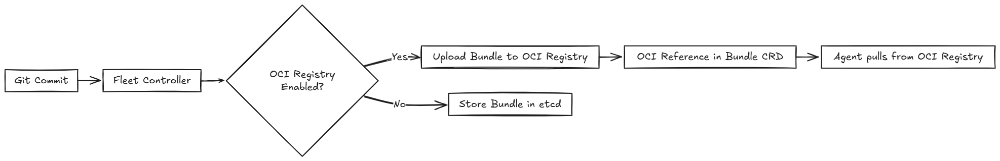

OCI存储
SUSE® Rancher Prime Continuous Delivery 默认情况下将Kubernetes捆绑资源存储在etcd中。然而，etcd有严格的大小限制，并且未针对大型工作负载进行优化。如果您的捆绑资源超过目标集群中etcd的大小限制，请考虑使用OCI注册表作为存储后端。
|
为了减少捆绑大小，在上传到OCI注册表之前，请压缩并进行base64编码捆绑内容。 |
使用OCI注册表可以帮助您：
-
通过卸载大型捆绑内容来减少etcd负载。
-
为大型清单或 Helm Chart 使用标准化的存储后端。

|
SUSE® Rancher Prime Continuous Delivery检查OCI工件的完整性，并将OCI工件标记为`latest`。 |
先决条件
-
一个正在运行的OCI注册表。
-
一个具有有效凭据的Kubernetes秘密。
-
一个SUSE® Rancher Prime Continuous Delivery安装（v2.12.0或更高版本）。
如何启用OCI存储
要启用OCI存储，请创建一个包含OCI注册表所需信息和访问选项的秘密。定义秘密有两种方式：
-
*全局秘密：*在与您的`GitRepo`s相同的命名空间中，精确命名为`ocistorage`的秘密。
-
这是备用秘密。如果未指定`GitRepo`级秘密，SUSE® Rancher Prime Continuous Delivery将使用此秘密作为命名空间中所有`GitRepo`s的秘密。
-
-
*GitRepo级别的秘密：*特定`GitRepo`资源的自定义秘密。
-
这是一个用户定义的秘密，可以有任何名称，并且必须在`GitRepo`资源中引用。
-
在`GitRepo`规格中设置`ociRegistrySecret`字段为秘密的名称。
-
|
如果秘密缺失或无效，SUSE® Rancher Prime Continuous Delivery不会回退到etcd。相反，它会记录一个错误并跳过部署。 |
创建一个包含注册表地址和可选凭据的Kubernetes秘密：
apiVersion: v1
kind: Secret
metadata:
name: ocistorage
namespace: fleet-local
type: fleet.cattle.io/bundle-oci-storage/v1alpha1
data:
reference: <base64-encoded-registry-url> # Only the reference field is required. All other fields are optional.
username: <base64-encoded-user>
password: <base64-encoded-password>
insecureSkipTLS: <base64-encoded-true/false>
basicHTTP: <base64-encoded-true/false>
agentUsername: <base64-encoded-readonly-user>
agentPassword: <base64-encoded-password>|
秘密必须具有类型： |
更改秘密不会触发重新部署。SUSE® Rancher Prime Continuous Delivery仅在Git更新或手动强制更新后使用新的注册表。
秘密字段引用
您可以配置的字段有：
| 字段 | 说明 | 格式 | 注意 |
|---|---|---|---|
|
OCI注册表的URL。 |
Base64编码的字符串 |
请勿使用`oci://`或类似的前缀。 |
|
具有写入注册表权限的用户名。 |
Base64编码的字符串 |
如果未指定，SUSE® Rancher Prime Continuous Delivery将不进行身份验证访问注册表。 |
|
具有写入权限用户的密码。 |
Base64编码的字符串 |
如果未指定，SUSE® Rancher Prime Continuous Delivery将不进行身份验证访问注册表。 |
|
代理的只读用户名。 |
Base64编码的字符串 |
使用只读凭据为代理增强安全性。如果您不设置这些凭据，代理将使用用户名。 |
|
只读密码用于代理。 |
Base64编码的字符串 |
使用只读凭据为代理增强安全性。如果您不设置这些凭据，代理将使用用户密码。 |
|
跳过TLS证书验证。 |
Base64 编码的 |
仅用于开发或测试。默认情况下， |
|
启用 HTTP 而不是 HTTPS。 |
Base64 编码的 |
不推荐。允许不安全的流量。默认情况下， |
SUSE® Rancher Prime Continuous Delivery 示例
请考虑以下 GitRepo 文件：
apiVersion: fleet.cattle.io/v1alpha1
kind: GitRepo
metadata:
name: frontend-oci
namespace: fleet-local
spec:
repo: https://github.com/your-org/fleet-oci-example.git
branch: main
paths:
- ./frontend
ociRegistrySecret: ocistorage您可以创建并应用一个 YAML 文件，其中包含注册表地址和可选凭据，类似于上面的示例。然后运行:
kubectl apply -f secrets/oci-secret.yaml或者您可以使用 kubectl 用未编码的文本创建秘密。Kubernetes 将自动将值转换为 base64。
kubectl -n fleet-local create secret generic ocistorage \
--type=fleet.cattle.io/bundle-oci-storage/v1alpha1 \
--from-literal=username=fleet-ci \
--from-literal=password=fleetRocks \
--from-literal=reference=192.168.1.39:8082 \
--from-literal=insecureSkipTLS=true \
--from-literal=basicHTTP=false \
--from-literal=agentUsername=fleet-ci-readonly \
--from-literal=agentPassword=readonlypass要验证您的秘密，请运行：
kubectl get secret ocistorage -n fleet-local -o yaml要解密并查看您的秘密：
kubectl get secret ocistorage -n fleet-local -o json | jq '.data | map_values(@base64d)'